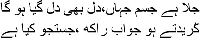

42

Since the body’s been burnt, so has the heart
Only ashes are left, there’s nothing to be found here
 am not a historian, my brothers, so I cannot say how many millions lost their homes because of the Partition, how many were lost forever, how many women were raped, how many people were murdered to the accompaniment of roars of ‘Har Har Mahadev’ or ‘Allahu-Akbar’. All I have in my bag are a few stories; those stories are all I can tell you. But then, history is not just an account of dates and numbers; stories and songs on people’s lips also create the big picture of history. From a friend in Delhi I heard that over twenty thousand Muslims there were killed; the houses and properties of over forty thousand Muslims in old Delhi were seized. But what will I do with these statistics? Is any compensation possible for the way the lives of young girls like Sharifan or Vimla ended? Should people like Sahai have died the way they did, like dogs? And how shall I wipe out the memory of the old woman who went mad looking for her daughter and died on the street? What insane violence was it that made a good man like Ramkhilwan want to kill me? Those of us who did not become victims of the riots have been carrying just such a history, the history that is to be found not in the archives but on the streets. In that history, Toba Tek Singh lies on a small, nameless patch of land between India and Pakistan. These, Mirza sahib, these are the people who are still the living history of our days of exile. Would anyone forget Sharifan once they had heard her story? Different historians will give different numbers for how many Muslims were killed in Delhi, the toll may climb or fall with time; but when Sirajuddin shouted, holding his daughter Sakina’s corpse, ‘My daughter is alive, huzoor, my daughter is alive,’ that moment can never be changed. The wound will remain as long as the universe exists, just like the mass murders at the Nazi camps and the gulags can never be obliterated.
am not a historian, my brothers, so I cannot say how many millions lost their homes because of the Partition, how many were lost forever, how many women were raped, how many people were murdered to the accompaniment of roars of ‘Har Har Mahadev’ or ‘Allahu-Akbar’. All I have in my bag are a few stories; those stories are all I can tell you. But then, history is not just an account of dates and numbers; stories and songs on people’s lips also create the big picture of history. From a friend in Delhi I heard that over twenty thousand Muslims there were killed; the houses and properties of over forty thousand Muslims in old Delhi were seized. But what will I do with these statistics? Is any compensation possible for the way the lives of young girls like Sharifan or Vimla ended? Should people like Sahai have died the way they did, like dogs? And how shall I wipe out the memory of the old woman who went mad looking for her daughter and died on the street? What insane violence was it that made a good man like Ramkhilwan want to kill me? Those of us who did not become victims of the riots have been carrying just such a history, the history that is to be found not in the archives but on the streets. In that history, Toba Tek Singh lies on a small, nameless patch of land between India and Pakistan. These, Mirza sahib, these are the people who are still the living history of our days of exile. Would anyone forget Sharifan once they had heard her story? Different historians will give different numbers for how many Muslims were killed in Delhi, the toll may climb or fall with time; but when Sirajuddin shouted, holding his daughter Sakina’s corpse, ‘My daughter is alive, huzoor, my daughter is alive,’ that moment can never be changed. The wound will remain as long as the universe exists, just like the mass murders at the Nazi camps and the gulags can never be obliterated.
The Partition became a macabre festival of killing in our lives, Mirza sahib. Human beings didn’t just kill other human beings, they also killed mutual trust, love, dependence. A family had somehow saved itself from rioters and hidden amidst the bushes. The elder of the two daughters was never found. The mother held the younger daughter in her arms. The rioters took their buffalo away. The cow was left behind, but its calf was lost. So the husband and wife hid in the undergrowth at night along with the cow. The little girl cried in fear from time to time. Her terrified mother clamped her hand over the girl’s mouth. Suddenly a calf was heard in the distance. At once the cow called out in a frenzy; she had recognized the cry, it was her offspring. The couple simply couldn’t quieten the cow. A little later they saw a line of torches approaching. In rage and despair the wife told the husband, ‘Why did you have to bring the animal along?’ The flame of the riots burnt all our sensitivities down to cinders in this way.
Mirza sahib, I keep remembering someone somewhere muttering like a madman, over and over again:
I have killed a man—his blood has drenched my body
I am the brother of this slain brother on the road
He considered me the younger one, but still he hardened
His heart and was killed; in fear of a wave on the bloodied
River I killed the flabbergasted older one, and now
I sleep—when I rest my face on his insubstantial chest
It seems that someone who had made a loving vow
To spread the light to all of us went forward but,
Finding no light anywhere, is sleeping.
Sleeping.
If I call out he will rise like a wave from the river
Of blood and say, coming closer, ‘I am Yasin,
Hanif, Muhammad, Maqbool, Karim, Aziz …
And you are …?’ His hand on my chest, he will raise
His eyes from his dead face—from the foaming river
Of blood he will say, ‘Gagan, Bipin, Shashi … from
Pathureghata, Shyambazaar, Galiff Street, Entally …’
Yes, there was no one, nothing—the sun had gone out. It would never be lit again. On just such a day Kasim arrived home, limping. He had been shot in his right leg, which was soaked in blood. As soon as he pushed the door open and entered, a blackened curtain of blood swayed before his eyes. His wife’s corpse lay in a pool of congealed blood. Kasim stared in bewilderment for some time, and then picked up the axe used to chop wood. It was time to pay back murder with murder. He would also let loose a torrent of blood on the roads, in the markets. As he was about to leave, he suddenly remembered Sharifan—where was his daughter Sharifan? ‘Sharifan, Sharifan …’ Kasim shouted.
There was no response. Maybe she was hiding somewhere, terrified. Peering through the door leading into the corridor inside the house, Kasim whispered, ‘Sharifan … beti … I’m back.’
It was as silent as in a desolate cave. Kasim froze as soon as he opened the door and stepped into the corridor. Sharifan lay dead nearby, completely naked. Like a rose that had just been torn into shreds. Kasim wanted to explode, but he simply stood there with his lips clamped shut. Then he wailed, covering his face with his hands, ‘Sharifan … my girl …’ Groping like a blind man, he found some clothes and covered her with them. He didn’t look back after that. He didn’t pause before his wife’s corpse either. Perhaps all he could see was Sharifan’s naked body. Kasim left home with his axe.
He began to run like lava flowing from a volcano. Near the crossroads he saw a Sikh and swung his axe at once. The man crumpled like a tree uprooted by a storm. Kasim advanced, swinging his axe. Three more corpses were left behind on the road, killed by Kasim’s axe. All he could see was a naked Sharifan; the gunpowder within him was crackling and smouldering. Crossing one deserted market after another, he entered a lane. But all the houses here belonged to Muslims. He took a different road. He let loose a flood of invectives against Hindus, while his bloodstained axe sparkled.
Kasim stopped on seeing a name written in Hindi on the door of a house. He began to beat on the door with his axe. The door collapsed. Entering, Kasim began to swear. ‘Come out you bastards, wherever you are.’
As soon as he pushed the inside door open, he came face to face with a girl, about the same age as Sharifan, innocent, tender. ‘Who are you?’ Kasim asked through clenched teeth.
— Vimla. Her voice held the trembling of young leaves.
— Hindu bitch …
Kasim looked at the fifteen-year-old girl for some time, his eyes still. Putting his axe down, he grabbed her with both hands and took her into the corridor, tearing her clothes off like a mad man. Time had stopped, Mirza sahib. Disrobing her completely, Kasim throttled her, and then stared at her. Just like Sharifan—it was Sharifan who was lying there. Kasim covered his face with his hands. All this while a fire had been blazing within him—now it was just ice. The burning lava of the volcano had turned into cold rock. Kasim didn’t have the power to move.
A little later a man appeared, whirling a sword. He saw another man with his eyes closed, throwing a blanket with shaking hands on something lying on the floor. ‘Who are you?’ he roared.
Kasim looked at him, startled.
— Kasim! What are you doing here?
Quavering, Kasim pointed to the blanket heaped on the floor and sobbed, ‘Sharifan …’
Many of those who killed went mad this way. None of them were murderers, Mirza sahib. So they could not have cold-bloodedly borne such sin all their lives. That’s a skill reserved for politicians, those who have never loved anything besides power. They can even wash the blood of their dearest ones from their hands. But to people like Kasim, Sharifan and Vimla are no different from each other. It’s not just from home or country, people are also evicted from their relationships in this way; they turn into meteorites falling through space. So abandoned that they cannot protect themselves. I have killed human beings—my body is drenched in their blood. I am the execution ground.
In the execution ground of my memories roams the mother who goes mad searching for her daughter, and then dies one day on the road. I was in Pakistan then, Mirza sahib. Muslims were still streaming across the border from the other side; Hindus were still leaving Pakistan. The refugee camps were like pens for cows and sheep. No food, no medical facilities. People were dying like flies. Attempts were being made to rescue the women and children who had fled across the border—who had been abducted, actually. Many people joined these efforts voluntarily. Hope rose in my heart at this. Everything was not finished, then. Surely the lord would not allow human beings to become complete animals. The volunteers had many stories to tell. One of them said that two girls from Saharanpur did not want to return to their parents anymore. Many young women killed themselves in shame and self-loathing on the way back. Many others had become addicts after prolonged torture. They asked for liquor instead of water when thirsty; when they didn’t get it they let loose a volley of abuse.
When I thought of these abducted girls, Mirza sahib, all I could see was their swollen bellies. What would happen to those who were inside those bellies? Who would accept them—India, or Pakistan? And which of the countries would pay the expenses for carrying them for nine months? Or did this have no value? Should we leave it all to nature?
Lost Muslim girls were coming across the border from the other side; Hindu girls without addresses on this side were going across. Officially they were called ‘absconders’. But actually no one had absconded. They were abducted and raped continuously; some turned to stone, some went insane, some wiped out their entire past.
One of the volunteers told me the story of the mother.
— We had to go across the border several times, Manto sahib. Every time we went, we saw an old Muslim woman. The first time was in Jalandhar. Dressed in a tattered sari, her hair full of grime and dust, constantly looking for someone.
— Looking for whom?
— For her daughter. She used to live in Patiala. Her only daughter was lost in the riots. They searched for her everywhere, but she wasn’t found. Maybe she had been killed. But the old woman simply wouldn’t accept this possibility. The second time I saw her was in Saharanpur. She was looking even more sickly, her hair was even dirtier. It was matted now. I tried to explain to her that she should stop looking for her daughter now, they had killed her. She muttered, ‘Killed her? Never. No one can kill her. No one can possibly kill my daughter.’
— And then?
— The third time that I saw her, she was wrapped in a strip of rag, practically naked. I tried to buy her clothes but she refused. I explained to her again, you have to believe me. Your daughter’s been killed in Patiala. ‘Why are you lying?’ she muttered.
— I’m not lying. You have shed enough tears for your daughter. Let me take you to Pakistan now.
— No … oh no … no one can kill my daughter.
— Why not?
The old woman’s voice sounded like the morning dew. —You don’t know how beautiful she is. So beautiful that no one can kill her. They wouldn’t even be able to slap her.
— How strange.
— I was astonished, Manto sahib. How can someone who has been dealt so many blows in life still believe that no one can kill beautiful people?
— Only those who have can do this, bhai. All she can fall back on now is a little beauty. What happened after that?
— Every time I went across the border, I saw the old woman. She practically turned into a skeleton as the days went by. Eventually she could barely see, but still she kept searching. The more time passed, the firmer her conviction grew that no one could have killed her daughter. That she was certain to find her one day.
— That’s why hope has to be slaughtered like halal meat. I said with a laugh.
— A woman volunteer told me it was no use trying to convince her, she had gone completely mad. It would be better to take her to Pakistan and have her admitted to a lunatic asylum. I didn’t want that, Manto sahib.
— Why not?
— She was alive only with the hope that she would get her daughter back. She was at least able to conduct her own search in this giant lunatic asylum. But if she were to be locked up in a cell she wouldn’t survive. The last time I saw her, in Amritsar, I wept, Manto sahib. I actually considered taking her to Pakistan and having her admitted to a lunatic asylum.
— Your conscience would have stopped gnawing at you, wouldn’t it?
— Perhaps.
— Go on.
— She was standing at Farid Chowk. Looking around her with virtually sightless eyes and searching. I was talking to someone about an abducted girl. The girl used to live with a soap market trader, a Hindu. At this moment a young woman appeared, holding the hand of a young Punjabi man, her face covered with a dupatta. When they came near the old woman, the young man retreated a couple of steps, tugging at the girl’s hand. The veil covering her face shifted and her pink face flashed. I cannot tell you how beautiful she was, Manto sahib.
— I know.
— Meaning?
— We have forgotten the language for it. Go on.
— I clearly heard the young man tell the woman, ‘This is your mother.’ She took a look at the old woman, and then told the young man, ‘Quick, let’s go.’ And the old woman screamed, ‘Bhagwari! Bhagwari!’ Going up to her, I held her arm and asked, ‘What’s the matter?’
— I saw her, beta.
— Saw whom?
— Bhagwari, my daughter. There, she just left.
— Bhagwari died a long time ago, ammijaan. Your daughter isn’t alive anymore, believe me. The old woman looked at me for some time. Then she collapsed on the ground. When I checked her pulse, I found her dead.
— Is it possible that the lord will never have mercy on his orphans?
— Mercy? You call this the lord’s mercy?
— Death is his best gift, bhai.
But the death that visited us during the riots was not the lord’s gift, my brothers. There was no funeral prayer for them, no janaza, you can still hear their unfulfilled souls fluttering their wings … the rattling of the chains on their arms and legs can be heard … Kasim still wanders around the streets of Old Delhi, shouting, ‘Sharifan … Sharifan …’
I know that Sahai’s dying cries are still buried in the pavement in front of Bombay’s JJ Hospital. Maybe angels appear on earth in the form of people like Sahai. He was a pimp—yes, a pimp for prostitutes. But I never saw another Hindu as devoted as he was. Sahai was from Benaras. You seldom see such a perfect person. He used to run his business from a small room, but it was always spick-and-span. Sahai’s girls had no beds for clients; only sheets and pillows spread out on mats. I never saw a stain on any of the sheets. Although Sahai had a servant, he used to supervise everything himself to ensure cleanliness. I know he never lied to anyone, Mirza sahib, never deceived anyone. ‘I have earned twenty thousand rupees in three years, Manto sahib,’ he told me once.
— How?
— The girls earn ten rupees each time. My commission is two-and-a-half rupees.
— Then you must have saved a lot.
— As soon as I have another ten thousand rupees, I will go to Kashi.
— What? Why?
— I will start a garment shop. I won’t stay in this business anymore.
— Why a garment shop? You could do other things as well. Sahai didn’t say anything. He himself didn’t seem to know why he wanted to start a garment shop in particular. Sometimes he sounded like a fraud, a cheat. Who would believe that he thought of his prostitutes as his daughters? But the strange thing was that he had opened savings accounts in post-offices for the women. He even supported a dozen or so of them. I simply couldn’t reconcile all this with his trade. Everyone in Sahai’s small kotha had to eat vegetarian food. So he used to give them a day off every week to go out for non-vegetarian meals. One day, he burst out in happiness when I visited him, ‘Manto sahib, Daata sahib has blessed me.’
— Meaning?
— Irfan used to visit this kotha, Manto sahib. He and Chandra fell in love with each other. So I got them married. Chandra lives in Lahore now. I got her letter today, she had prayed for me at Daata sahib’s dargah. It seems he has heard her prayers. I won’t have to wait much longer for the remaining ten thousand.
I didn’t meet Sahai for quite some time after this. The riots began. There was a curfew in the city, no people on the roads, no buses either. I was walking through Bhindi Bazaar one morning. Near JJ Hospital, I saw a man lying on the pavement, his body streaming with blood. Another victim of the riots. Suddenly I discovered that the body was still trembling. There was no one else on the road. I bent over the man. Oh my God, it was Sahai, a mist of blood hanging over his face. I called him by his name. When I got no response for a long time, I was about to leave. Suddenly Sahai opened his eyes. —Manto sahib …
I kept asking him questions. Sahai did not have the strength to answer. Somehow he managed to say, ‘I won’t survive Manto sahib.’
It was a peculiar situation, Mirza sahib. Sahai lay in a pool of blood in a Muslim neighbourhood—he had obviously been killed by a Muslim, and I was a Muslim too, standing next to him as he died. If anyone saw us, I would be identified as his killer. For a moment I considered taking him to the hospital; the very next moment, I thought, what if he takes revenge by framing me! This was how the riots had turned our faith and trust upside down. To tell you the truth, I wanted to run away. Sahai called out my name. I simply couldn’t go away.
Sahai was trying to pull something out of his shirt, but he didn’t have the strength to do it. Finally he told me, ‘There’s some jewellery and twelve thousand rupees in an inside pocket … all of it belongs to Sultana … you know her, don’t you … I was on my way to return it to her … the way things are going … no one knows what tomorrow will bring … please give these to Sultana … tell her to leave this country … yes, you too … you must escape too … you won’t survive otherwise …’
The rest of what Sahai was trying to say congealed with his blood on the pavement. I could also have been killed on the Bombay streets like he was. That was a time, my brothers, when there really was no difference between being dead and alive. One day Manto’s friends saw off his corpse on a Karachi-bound ship.